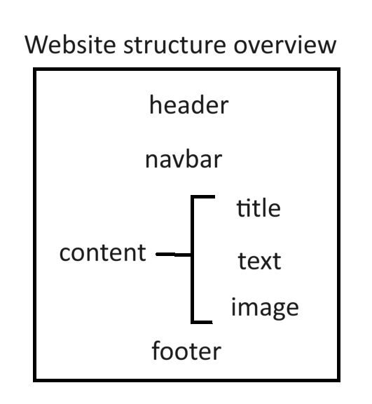
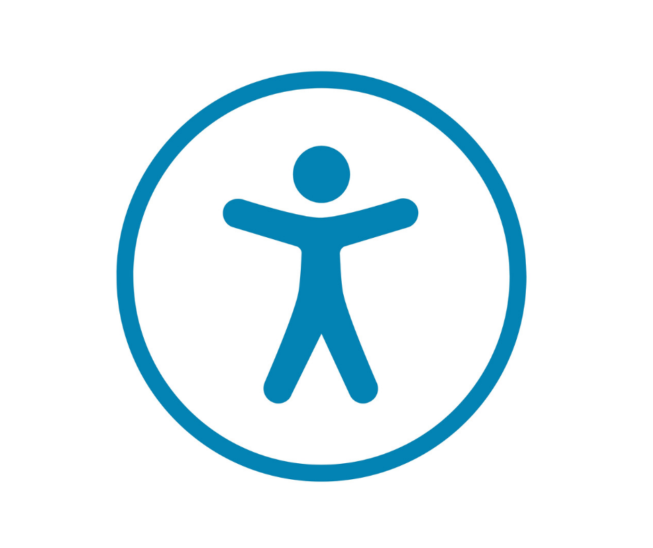

Comments Page
This page contains a justification and explanation for the design choices made when constructing this beautiful website. This website was made for my Web Systems assignment, and was designed to be visually pleasing with some nice placeholder content. I gave special attention to making the website accessible and easy to follow.
Technical Overview
The structure of my website was fairly simple. I opened with a large h1 header positioned towards the top left of the screen. This is where users expect to see a title and are easily able to identify the screen they are on. The header has a special ID selector. An ID was chosen because the header is only applied once and exactly once per file. This selector is titled "baseHeader" and fixes the font to Lexend which is distinguishable and distinct. It also sets the colour and padding. The padding is chosen relative to the font size so that in the case of a resize, the website retains its layout and readability. A base body class selector is applied to the entire document to standardize the background colour and the padding, as well as use the custom Roboto font.
The website then proceeds to have a horizontal navigation bar, a nav element. This bar contains links via hrefs in the anchor elements to all the other pages in the website- Home, Past, Future and Comments, regardless of the page the user is currently on. The navbar is styled using the nav selector, which sets a dark background and rounds it to visually appear as though the links are set on an oval. The nav selector also applies padding and justifies the text placed on it.
Additional selectors are applied to elements of the nav that set color and the hover effect. This is done using the pseudoclass :hover. These selectors also have a flex direction applied to allow the nav bar to scale when the window is shifted, assisting in compatibility with different browsers and other devices too.
The rest of the website is primarily content. This consists of text that is styled using the base paragraph class selector, which sets the colour and the padding as well as the margin at the end of each element that uses this class. This is a super helpful and versatile class as it can be applied to any element that does not require its own set of custom settings, and covers all the required formattings. It keeps the visual of the website consistent and the margin spacing is essential to assist readability, although I will cover this in greater detail in the following section.
Majority of this text is contained within paragraph elements, keeping the layout consistent and ensuring all changes made to the colour are universally applied without altering any preexisting effects. The paragraph elements are broken up by images that are relevant to the content being shown. Each image has the same selector applied to it which rounds and centers the image. The images also contain alt text. The alternating images and text are achieved simply by using multiple elements sequentially.
Finally, a footer is used similar to the navigation bar. The footer is also a nav element and uses the same nav selector, however, unlike the other nav element, this one does not contain any links and instead specifies an absolute size for the text that by default is slightly smaller than the rest of the website text. This is done using the info-footer class. This new class has no purpose other than to anchor the bar at the bottom of the page and align the contents. It is used because functionally this nav element is independent to the other, and some features such as being stuck to the bottom are unique to either element.
This format was mirrored in all the pages, however one page also included a span with coloured text. This was purely to illustrate the point made in that portion of the text.
Overview of unique features
| Page | Feature | Accomplished Using |
|---|---|---|
| Home | Unordered list | ul element |
| Past | Multicoloured text | span element |
| Comments | Table | tr element, td element |
Aesthetic Overview
Fundamentally, the effect I was going for was minimalistic and simplistic. Visually I took inspiration from the typing website MonkeyType.com, using the same font Roboto and a similar but different colour scheme. This is because as I conducted my research I realized that simplistic websites are easy to use regardless of whether you have accessibility needs or not, and if executed correctly simplicity need not hinder functionality. Hopefully the visually pleasing kind of vibe the website gives off encourages users to stay longer and enjoy their stay, getting more out of the website and allow them to focus on content rather than on trying to figure out what the text says or how to navigate.
The contrast I have used is high, with light text on a darker background. This makes the text stand out and users don't have to squint to read. Despite the contrast, neither colour used is bright or hurts the eyes like a bright yellow or red would.
The sizing of the various texts are deliberate, as the header is quite obviously the largest element intending to draw the attention of users. It is also a vector, as upon noticing the header we naturally follow it down to the navbar and the rest of the website. The secondary headers are very useful for users who are trying to find a particular subheading by skimming the website. If necessary or if the website was big enough, I would have implemented a contents page.
The navbar is sooo nice to look at, it blends and matches the colour scheme yet is dark enough to identify, the contents are spaced and the font and style is consistent with the rest of the page. Upon hovering over a page, the text changes colour to white which alerts the user that they can click the link.
The footer is on theme with the navbar and is designed so that it will not be noticed unless it is specifically being looked for, it blends in with the website. The text is slightly smaller to indicate that it is less important than the content, but it is still very much there. It is pinned to the bottom of the website so that it is preceded by a portion of blank space and not followed by any, which might mislead the users or appear as though the website is broken.
Accessibility
Several measures are in place to ensure that my website complies with the accessibility guidelines set out by Tim Berners-Lee and W3C.
Firstly, the text is super easy to read and the colour chosen is such that even people with weak vision impairment or colour blindness have no trouble making out content. It is pleasing to look at.
All images have alt text, allowing people who use software that reads from websites to have access to the same info that everyone else does. No information is exclusive to images.
My website does not use any javascript or any funny packages or libraries, and is accessible to even the most basic devices. This also applies to older devices.
My website is accessible via chrome and edge, and on both computer and mobile devices meaning it is readable by a huge audience and not limited to those with particular operating systems or high end/new devices.